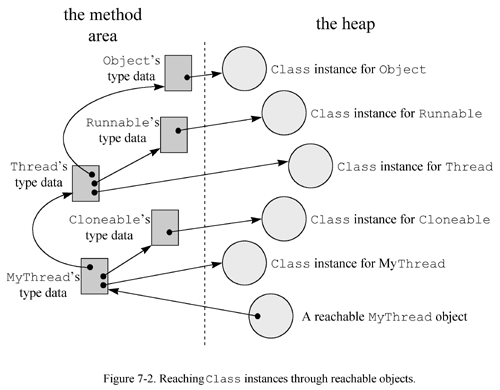

07 The Lifetime of a Class
- Class Loading, Linking, and Initialization
- The Lifetime of an Object
- Unloading and Finalization of Classes
- On the CD-ROM
- The Resources Page
The previous chapter described in detail the format of the Java class file, the standard binary form for representing Java types. This chapter looks at what happens when binary type data is imported into a Java Virtual Machine. The chapter follows the lifetime of a type (class or interface) from the type's initial entrance into the virtual machine to its ultimate exit. It discusses the processes of loading, linking, and initialization that occur at the beginning of a class's lifetime; the processes of object instantiation, garbage collection, and finalization that can occur in the prime of a class's lifetime; and the finalization and unloading of types that can occur at the end of a class's lifetime.
Class Loading, Linking, and Initialization
The Java Virtual Machine makes types available to the running program through a process of loading, linking, and initialization. Loading is the process of bringing a binary form for a type into the Java Virtual Machine. Linking is the process of incorporating the binary type data into the runtime state of the virtual machine. Linking is divided into three sub-steps: verification, preparation, and resolution. Verification ensures the type is properly formed and fit for use by the Java Virtual Machine. Preparation involves allocating memory needed by the type, such as memory for any class variables. Resolution is the process of transforming symbolic references in the constant pool into direct references. Implementations may delay the resolution step until each symbolic reference is actually used by the running program. After verification, preparation, and (optionally) resolution are completed, the type is ready for initialization. During initialization, the class variables are given their proper initial values. See Figure 7-1 for a graphical depiction of this process. the beginning of a class's lifetime: loading --> linking --> initialization

As you can see from Figure 7-1, the processes of (1) loading, (2) linking, and (3) initialization must take place in that order. The only exception to this required ordering is the third phase of linking, resolution, which may optionally take place after initialization. 这里重点讲了resolution的时机。
The Java Virtual Machine specification gives implementations flexibility in the timing of class and interface loading and linking, but strictly defines the timing of initialization. All implementations must initialize each class and interface on its first active use. JVM specification对于loading和linking的时机定义的非常灵活，而对initialization的时机则非常严格。当一个类或接口进行active use的时候，就必须进行initialize。
An active use of a class is:
- The invocation of a constructor on a new instance of the class 创建对象
- The creation of an array that has the class as its an element type 创建数组
- The invocation of a method declared by the class (not inherited from a superclass) 调用static method
-
The use or assignment of a field declared by the class (not inherited from a superclass or superinterface),
except for fields that are both
staticandfinal, and are initialized by a compile-time constant expression 使用static field
An active use of an interface is:
- The use or assignment of a field declared by the interface (not inherited from a superinterface), except for fields that are initialized by a compile-time constant expression 使用static field
All other uses of a type besides the five listed above are passive uses of the type. Several examples illustrating the difference between active and passive uses are given later in this chapter. 这里提到了active use和passive use
Aside from its own initial active use, there is one other situation that will cause the initialization of a class: the initial active use of one of its subclasses. Initialization of a class requires prior initialization of all its superclasses. 对于subclass的active use，会先让superclass实施initialization，再让subclass实施initialization。
The same is not true of interfaces, however. An interface is initialized only because a non-constant field declared by the interface is used, never because a subinterface or class that implements the interface needs to be initialized. Thus, initialization of a class requires prior initialization of all its superclasses, but not its superinterfaces. Initialization of an interface does not require initialization of its superinterfaces. 刚才的对于class的initialization规则，并不适用于interface。
The "initialize on first active use" rule drives the mechanism that loads, links, and initializes classes. On its first active use, a type must be initialized. Before it can be initialized, however, it must be linked. And before it can be linked, it must be loaded. At their option, implementations may load and link types early. They need not wait until the type's first active use to load and link the type. If a type hasn't been loaded and linked before its first active use, however, it must be loaded and linked at that time, so that it can be initialized. active use <-- initialization <-- linking <-- loading
Loading
The loading process consists of three basic activities. To load a type, the Java Virtual Machine must:
- produce a stream of binary data that represents the type
- parse the stream of binary data into internal data structures in the method area 存储到method area区域
-
create an instance of class
java.lang.Classthat represents the type 创建Class实例
The stream of binary data may adhere to the Java class file format, but could alternatively follow some other format. As mentioned in previous chapters, all Java Virtual Machine implementations must recognize the Java class file format, but individual implementations may also recognize other binary formats. 这里讲了binary data的格式，并不一定是java class file format，也可能是其它格式
The Java Virtual Machine specification does not say how the binary data for a type must be produced. Some potential ways to produce binary data for a type are: 这里讲了binary data的几种来源
- load a Java class file from the local file system
- download a Java class file across a network
- extract a Java class file from a ZIP, JAR, CAB, or other archive file
- extract a Java class file from a proprietary database
- compile a Java source file on the fly into the class file format
- compute the class file data for a type on the fly
- any of the above, but using a binary file format other than the Java class file
Given the binary data for a type, the Java Virtual Machine must process that data to a great enough extent that it can create an instance of class java.lang.Class.
The virtual machine must parse the binary data into implementation-dependent internal data structures.
(See Chapter 5, "The Java Virtual Machine," for a discussion of potential internal data structures for storing class data.)
The Class instance, the end product of the loading step, serves as an interface between the program and the internal data structures.
To access information about a type that is stored in the internal data structures,
the program invokes methods on the Class instance for that type.
loading --> Class instance
As described in previous chapters, types are loaded either through the primordial class loader or through class loader objects.
The primordial class loader, a part of the virtual machine implementation, loads types (including the classes and interfaces of the Java API) in an implementation-dependent way.
Class loader objects, instances of subclasses of java.lang.ClassLoader, load classes in custom ways.
The inner workings of class loader objects are described in more detail later in Chapter 8, "The Linking Model."
class loader = primordial class loader + class loader objects
Class loaders (primordial or object) need not wait until a type's first active use before they load the type.
Class loaders are allowed to cache binary representations of types, load types early in anticipation of eventual use, or load types together in related groups.
If a class loader encounters a problem during early loading, however, it must report that problem (by throwing a subclass of LinkageError ) only upon the type's first active use.
In other words, if a class loader encounters a missing or malformed class file during early loading, it must wait to report that error until the class's first active use by the program.
If the class is never actively used by the program, the class loader will never report the error.
Linking
Verification
After a type is loaded, it is ready to be linked. The first step of the linking process is verification--ensuring that the type obeys the semantics of the Java language and that it won't violate the integrity of the virtual machine.
Verification is another area in which implementations of the Java Virtual Machine have some flexibility. Implementation designers can decide how and when to verify types. The Java Virtual Machine specification lists all the exceptions that a virtual machine can throw and under what circumstances it must throw them. No matter what kind of trouble a Java Virtual Machine might encounter, there is an exception or error it is supposed to throw. The specification says what exception or error should be thrown in each situation. In some cases, the specification says exactly when the exception or error should be thrown, but usually doesn't dictate precisely how or when the error condition should be detected. Verification在实现上，有一定的灵活性
Nevertheless, certain kinds of checks are very likely to take place at certain times in most Java Virtual Machine implementations. For example, during the loading process, the virtual machine must parse the stream of binary data that represents the type and build internal data structures. At this point, certain checks will have to be done just to ensure the initial act of parsing the binary data won't crash the virtual machine. During this parsing, implementations will likely check the binary data to make sure it has the expected overall format. Parsers of the Java class file format might check the magic number, make sure each component is in the right place and of the proper length, verify that the file isn't too short or too long, and so on. Although these checks take place during loading, before the official verification phase of linking, they are still logically part of the verification phase. The entire process of detecting any kind of problem with loaded types is placed under the category of verification. Verification在实现上，有一定的共性
Another check that likely occurs during loading is making sure that every class except Object has a superclass.
This may be done during loading because when the virtual machine loads a class, it must also make sure all of the class's superclasses are loaded also.
The only way a virtual machine can know the name of a given class's superclass is by peering into the binary data for the class.
Since the virtual machine is looking at every class's superclass data during loading anyway, it may as well make this check during the loading phase.
在loading的过程上，一个要进行的check就是保证每一个class有一个superclass。
Another check--one that likely occurs after the official verification phase in most implementations--is the verification of symbolic references. As described in earlier chapters, the process of dynamic linking involves locating classes, interfaces, fields, and methods referred to by symbolic references stored in the constant pool, and replacing the symbolic references with direct references. When the virtual machine searches for a symbolically referenced entity (type, field, or method), it must first make sure the entity exists. If the virtual machine finds that the entity exists, it must further check that the referencing type has permission to access the entity, given the entity's access permissions. These checks for existence and access permission are logically a part of verification, the first phase of linking, but most likely happen during resolution, the third phase of linking. Resolution itself can be delayed until each symbolic reference is first used by the program, so these checks may even take place after initialization. 有一个check是在verification之后发生的，那就是对于symbolic references的验证，要验证它是否存在、是否有权限访问它。
So what gets checked during the official verification phase? Anything that hasn't already been checked before the official verification phase and that won't get checked after it. Here two lists of some of the things that are good candidates for checking during the official verification phase. This first list is composed of checks that ensure classes are binary compatible with each other:
- checking that final classes are not subclassed final类不能有子类
- checking that final methods are not overridden final方法不能被覆盖
- if the type being checked is a non-abstract class, checking that all the methods declared in any interfaces implemented by the class are indeed implemented by the class 非抽象类中，不能有抽象的方法
- making sure no incompatible method declarations (such as two methods that have the same name, the same number, order, and types of parameters, but different return types) appear between the type and its supertypes 保证父类和子类的方法名字、接收参数、返回值类型要相同
Note that while these checks require looking at other types, they only require looking at supertypes. Superclasses need to be initialized before subclasses, so these classes are likely already loaded. Superinterfaces do not need to be initialized when a class that implements them is initialized. However, this verification step will require their loading. (They won't be initialized, just loaded and possibly linked at the option of the virtual machine implementation.) All a class's supertypes will have to be loaded to make sure they are all still binary compatible.
-
checking that all constant pool entries are consistent with each other.
(For example, the
string_indexitem of aCONSTANT_String_infoentry must be the index of aCONSTANT_Utf8_infoentry.) - checking that all special strings contained in the constant pool (class names, field and method names, field and method descriptors) are well-formed
- verifying the integrity of the bytecodes
The most complicated task in the above list is the last one: bytecode verification. All Java Virtual Machines must in some way verify the integrity of the bytecodes for every method they execute. For example, implementations are not allowed to crash because a jump instruction sends the virtual machine beyond the end of a method. They must detect that the jump instruction is invalid through some process of bytecode verification, and throw an error. 最复杂的任务在于bytecode verification
Java Virtual Machine implementations are not required to verify bytecodes during the official verification phase of linking. Implementations are free, for example, to verify individual instructions as each instruction is executed. One of the design goals of the Java Virtual Machine instruction set, however, was that it yield bytecodes streams that can be verified all at once by a data flow analyzer. The ability to verify bytecode streams all at once during linking, rather than on the fly as the program runs, gives a big boost to the potential execution speed of Java programs. 对于bytecode verification的时机，并不一定是linking当中的verification阶段，也可以在运行的时候来验证。但是，在linking过程中，进行bytecode verification有助于提高Java programs的运行速度。
When verifying bytecodes via a data flow analyzer, the virtual machine may have to load other classes to ensure that the semantics of the Java language are being followed.
For example, imagine a class contained a method that assigned a reference to an instance of java.lang.Float to a field of type java.lang.Number.
In this case, the virtual machine would have to load class Float during bytecode verification to make sure it was a subclass of class Number.
It would have to load Number to make sure it wasn't declared final.
The virtual machine must not initialize class Float at this time, just load it.
Float will be initialized only upon its first active use.
bytecode verification --> data flow analyzer --> load other classes to ensure that the semantics of the Java language
For more information on the class verification process, see Chapter 3, "Security."
Preparation
After a Java Virtual Machine has loaded a class and performed whatever verification it chooses to do up front, the class is ready for preparation. During the preparation phase, the Java Virtual Machine allocates memory for the class variables and sets them to default initial values. The class variables are not initialized to their proper initial values until the initialization phase. (No Java code is executed during the preparation step.) During preparation, the Java Virtual Machine sets the newly allocated memory for the class variables to a default value determined by the type of the variable. The default values for the various types are shown in Table 7-1. During the preparation phase, the Java Virtual Machine allocates memory for the class variables and sets them to default initial values.
| Type | Initial Value |
|---|---|
int |
0 |
long |
0L |
short |
(short) 0 |
char |
'\u0000' |
byte |
(byte) 0 |
reference |
null |
float |
0.0f |
double |
0.0d |
There is no boolean in Table 7-1, because boolean is not a primitive type in the Java Virtual Machine.
Internally, boolean is implemented as an int, which gets set to zero (boolean false) by default.
Therefore, boolean class variables are in effect initialized to boolean false.
During the preparation phase, Java Virtual Machine implementations may also allocate memory for data structures that are intended to improve the performance of the running program. An example of such a data structure is a method table, which contains a pointer to the data for every method in a class, including those inherited from its superclasses. A method table enables an inherited method to be invoked on an object without a search of superclasses at the point of invocation. Method tables are described in more detail in Chapter 8, "The Linking Model." preparation phase --> method table
Resolution
After a type has been through the first two phases of linking: verification and preparation, it is ready for the third and final phase of linking: resolution. Resolution is the process of locating classes, interfaces, fields, and methods referenced symbolically from a type's constant pool, and replacing those symbolic references with direct references. As mentioned above, this phase of linking is optional until (and unless) each symbolic reference is first used by the program. Constant pool resolution is described in detail in Chapter 8, "The Linking Model." Resolution is the process of locating classes, interfaces, fields, and methods referenced symbolically from a type's constant pool, and replacing those symbolic references with direct references.
Initialization
The final step required to ready a class or interface for its first active use is initialization, the process of setting class variables to their proper initial values. As used here, a "proper" initial value is the programmer's desired starting value for a class variable. A proper initial value contrasts with the default initial value given to class variables during preparation. As described above, the virtual machine assigns default values based only on each variable's type. Proper initial values, by contrast, are based on some master plan known only to the programmer. preparation --> default value; initialization --> initial value
In Java code, a proper initial value is specified via a class variable initializer or static initializer. A class variable initializer is an equals sign and expression next to a class variable declaration, as in:
begin
// On CD-ROM in file classlife/ex1/Example1a.java
class Example1a {
// "= 3 * (int) (Math.random() * 5.0)" is the class variable initializer
static int size = 3 * (int) (Math.random() * 5.0);
}
end
A static initializer is a block of code introduced by the static keyword, as in:
begin
// On CD-ROM in file classlife/ex1/Example1b.java
class Example1b {
static int size;
// This is the static initializer
static {
size = 3 * (int) (Math.random() * 5.0);
}
}
end
All the class variable initializers and static initializers of a class are collected by the Java compiler and placed into one special method, the class initialization method.
In the Java class file, the class initialization method is named "<clinit>".
Regular methods of a Java application cannot invoke a class initialization method.
This kind of method can only be invoked by the Java Virtual Machine, which invokes it to set a class's static variables to their proper initial values.
clinit方法，只能由JVM来调用 --> proper initial values
Initialization of a class consists of two steps:
- Initializing the class's direct superclass (if any), if the direct superclass hasn't already been initialized 对父类进行initialization
- Executing the class's class initialization method, if it has one 对当前类进行initialization
When initializing a class's direct superclass, the same two steps listed above must be followed.
As a result, the first class that will be initialized will always be Object,
then all the classes on down the inheritance hierarchy to the class being actively used.
Superclasses will be initialized before subclasses.
父类要比子类先进行initialization
Initialization of an interface does not require initialization of its superinterfaces. Initialization of an interface consists of only one step:
- Executing the interface's class initialization method, if it has one
The code of a <clinit>() method does not explicitly invoke a superclass's <clinit>() method.
Before a Java Virtual Machine invokes the <clinit>() method of a class, therefore,
it must make certain the <clinit>() methods of superclasses have been executed.
父类要比子类先进行initialization
Java Virtual Machines must also make sure the initialization process is properly synchronized. If multiple threads need to initialize a class, only one thread should be allowed to perform the initialization while the other threads wait. After the active thread completes the initialization process, it must notify any waiting threads. See Chapter 20, "Thread Synchronization," for information about synchronization, wait and notify. Java Virtual Machines must make sure the initialization process is properly synchronized.
The Class Initialization Method
As mentioned above, Java compilers place the code for class variable initializers and static initializers into the <clinit>() method of the class file
in the order in which they appear in the class declaration.
For example, given this class:
begin
// On CD-ROM in file classlife/ex1/Example1c.java
class Example1c {
static int width;
static int height = (int) (Math.random() * 2.0);
// This is the static initializer
static {
width = 3 * (int) (Math.random() * 5.0);
}
}
end
The Java compiler generates the following <clinit>() method:
begin
// The code for height's class variable initializer begins here
// Invoke Math.random(), which will push
// a double return value
0 invokestatic #6 <Method double random()
3 ldc2_w #8 <Double 2.0 // Push double constant 2.0
6 dmul // Pop two doubles, multiply, push result
7 d2i // Pop double, convert to int, push int
// Pop int, store into class variable
// height
8 putstatic #5 <Field int height
// The code for the static initializer begins here
11 iconst_3 // Push int constant 3
// Invoke Math.random(), which will push
// a double return value
12 invokestatic #6 <Method double random()
15 ldc2_w #10 <Double 5.0 // Push double constant 5.0
18 dmul // Pop two doubles, multiply, push result
19 d2i // Pop double, convert to int, push int
20 imul // Pop two ints, multiply, push int result
// Pop int, store into class variable
// width
21 putstatic #7 <Field int width
24 return // Return void from <clinit> method
end
This <clinit>() method first executes the code for Example1c's only class variable initializer, which initializes height,
then executes the code for the static initializer, which initializes width.
The initialization is done in this order because the class variable initializer appears textually before the static initializer in the source code of the Example1c class.
初始化（initialization）的顺序，是根据source code中的出现的顺序决定的。
Not all classes will necessarily have a <clinit>() method in their class file.
If a class declares no class variables or static initializers, it won't have a <clinit>() method.
If a class declares class variables, but doesn't explicitly initialize them with class variable initializers or static initializers, it won't have a <clinit>() method.
If a class contains only class variable initializers for static final variables,
and those class variable initializers use compile-time constant expressions,
that class won't have a <clinit>() method.
Only those classes that actually require Java code to be executed to initialize class variables to proper initial values will have a class initialization method.
这里讲了在什么情况下会生成clinit方法。
Here's an example of a class that won't be awarded a <clinit>() method by the Java compiler:
begin
// On CD-ROM in file classlife/ex1/Example1d.java
class Example1d {
static final int angle = 35;
static final int length = angle * 2;
}
end
Class Example1d declares two constants, angle and length,
and initializes them with expressions that are compile-time constants.
The compiler knows that angle represents the value 35 and length represents the value 70.
When the Example1d class is loaded by a Java Virtual Machine,
angle and length are not stored as class variables in the method area.
As a result, no <clinit>() method is needed to initialize them.
The angle and length fields are not class variables,
they are constants, which are treated specially by the Java compiler.
这两个变量是constants，而不是class variables。
Instead of treating Example1d's angle and length fields as class variables,
the Java compiler places the constant int values they represent into the constant pool or bytecode streams of any class that uses them.
For example, if a class uses Example1d's angle field,
that class will not have in its constant pool a symbolic reference to the angle field of class Example1d.
Instead, the class will have operands embedded in its bytecode streams that have the value 35.
If the constant value of angle were outside the range of a short (-32,768 to 32,767), say 35,000,
the class would have a CONSTANT_Integer_info entry in its constant pool with the value of 35,000.
Here's a class that uses both a constant and a class variable from other classes:
begin
// On CD-ROM in file classlife/ex1/Example1e.java
class Example1e {
// The class variable initializer for symbolicRef uses a symbolic
// reference to the size class variable of class Example1a
static int symbolicRef = Example1a.size;
// The class variable initializer for localConst doesn't use a
// symbolic reference to the length field of class Example1d.
// Instead, it just uses a copy of the constant value 70.
static int localConst = Example1d.length * (int) (Math.random() * 3.0);
}
end
The Java compiler generates the following <clinit>() method for class Example1e:
begin
// The code for symbolicRef's class variable initializer begins here:
// Push int value from Example1a.size.
// This getstatic instruction refers to a
// symbolic reference to Example1a.size.
0 getstatic #9 <Field int size
// Pop int, store into class variable
// symbolicRef
3 putstatic #10 <Field int symbolicRef
// The code for localConst's class variable intializer begins here:
// Expand byte operand to int, push int
// result. This is the local copy of
6 bipush 70 // Example1d's length constant, 70.
// Invoke Math.random(), which will push
// a double return value
8 invokestatic #8 <Method double random()
11 ldc2_w #11 <Double 3.0 // Push double constant 3.0
14 dmul // Pop two doubles, multiply, push result
15 d2i // Pop double, convert to int, push int
16 imul // Pop two ints, multiply, push int result
// Pop int, store into class variable
// localConst
17 putstatic #7 <Field int localConst
20 return // Return void from <clinit> method
end
The getstatic instruction at offset zero uses a symbolic reference (in constant pool entry nine) to the size field of class Example1a.
The bipush instruction at offset six is followed by a byte that contains the constant value represented by Example1d.length.
Example1e's constant pool contains no symbolic reference to anything in class Example1d.
Interfaces may also be awarded a <clinit>() method in the class file.
All fields declared in an interface are implicitly public, static, and final and must be initialized with a field initializer.
If an interface has any field initializers that don't resolve at compile-time to a constant,
that interface will have a <clinit>() method. Here's an example:
begin
// On CD-ROM in file classlife/ex1/Example1f.java
interface Example1f {
int ketchup = 5;
int mustard = (int) (Math.random() * 5.0);
}
end
The Java compiler generates the following <clinit>() method for interface Example1f:
begin
// The code for mustard's class variable initializer begins here
// Invoke Math.random(), which will push
// a double return value
0 invokestatic #6 <Method double random()
3 ldc2_w #7 <Double 5.0 // Push double constant 5.0
6 dmul // Pop two doubles, multiply, push result
7 d2i // Pop double, convert to int, push int
// Pop int, store into class variable
// mustard
8 putstatic #5 <Field int mustard
11 return // Return void from <clinit> method
end
Note that only the mustard field is initialized by this <clinit>() method.
Because the ketchup field is initialized to a compile-time constant, it is treated specially by the compiler.
Although types that use Example1f.mustard will contain a symbolic reference to the field,
types that use Example1f.ketchup will contain a local copy of ketchup's constant value, 5.
Active versus Passive Use
As mentioned above, the Java Virtual Machine initializes types on their first active use or, in the case of classes, upon the first active use of a subclass. Only four activities constitute an active use: invoking an instance initialization method on a new instance of a class, creating an array whose element type is the class, invoking a method declared in a class, and accessing a non-constant field declared in a class or interface. Only four activities constitute an active use
A use of a non-constant field is an active use of only the class or interface that actually declares the field. For example, a field declared in a class may be referred to via a subclass. A field declared in an interface may be referred to via a subinterface or class that implements the interface. These are passive uses of the subclass, subinterface, or class that implements the interface--uses that won't trigger their initialization. They are an active use only of the class or interface in which the field is actually declared. Here's an example that illustrates this principle: A use of a non-constant field is an active use of only the class or interface that actually declares the field.
begin
// On CD-ROM in file classlife/ex2/NewParent.java
class NewParent {
static int hoursOfSleep = (int) (Math.random() * 3.0);
static {
System.out.println("NewParent was initialized.");
}
}
// On CD-ROM in file classlife/ex2/NewbornBaby.java
class NewbornBaby extends NewParent {
static int hoursOfCrying = 6 + (int) (Math.random() * 2.0);
static {
System.out.println("NewbornBaby was initialized.");
}
}
// On CD-ROM in file classlife/ex2/Example2.java
class Example2 {
// Invoking main() is an active use of Example2
public static void main(String[] args) {
// Using hoursOfSleep is an active use of NewParent, but a
// passive use of NewbornBaby
int hours = NewbornBaby.hoursOfSleep;
System.out.println(hours);
}
static {
System.out.println("Example2 was initialized.");
}
}
end
In the above example, executing main() of Example2 causes only Example2 and NewParent to be initialized.
NewbornBaby is not initialized and need not be loaded.
The following text is printed to the standard output:
begin Example2 was initialized. NewParent was initialized. 2 end
A use of a field that is both static and final, and initialized by a compile-time constant expression, is not an active use of the type that declares the field.
As mentioned above, the Java compiler resolves references to such fields to a local copy of the constant value
that resides either in the referring class's constant pool, in its bytecode streams, or both.
Here's an example that illustrates this special treatment of static final fields:
begin
// On CD-ROM in file classlife/ex3/Angry.java
interface Angry {
String greeting = "Grrrr!";
int angerLevel = Dog.getAngerLevel();
}
// On CD-ROM in file classlife/ex3/Dog.java
class Dog {
static final String greeting = "Woof, woof, world!";
static {
System.out.println("Dog was initialized.");
}
static int getAngerLevel() {
System.out.println("Angry was initialized");
return 1;
}
}
// On CD-ROM in file classlife/ex3/Example3.java
class Example3 {
// Invoking main() is an active use of Example3
public static void main(String[] args) {
// Using Angry.greeting is a passive use of Angry
System.out.println(Angry.greeting);
// Using Dog.greeting is a passive use of Dog
System.out.println(Dog.greeting);
}
static {
System.out.println("Example3 was initialized.");
}
}
end
Running the Example3 application yields the following output:
begin Example3 was initialized. Grrrr! Woof, woof, world! end
Had Angry been initialized, the string "Angry was initialized." would have been written to the standard output.
Likewise, had Dog been initialized, the string "Dog was initialized." would have been written to the standard output.
As you can see from the above output, neither interface Angry or class Dog were ever initialized during the execution of the Example3 application.
For more information about this special treatment of static final variables, see Chapter 8, "The Linking Model."
The Lifetime of an Object
Once a class has been loaded, linked, and initialized, it is ready for use. The program can access its static fields, invoke its static methods, or create instances of it. This section describes class instantiation and initialization, activities that take place at the beginning of an object's lifetime, and garbage collection and finalization, activities that mark the end of an object's lifetime. the lifetime of an object = class instantiation and initialization + garbage collection and finalization
Class Instantiation
In Java programs, classes can be instantiated explicitly or implicitly.
The three ways a class can be instantiated explicitly are with the new operator, by invoking newInstance() on a Class object,
or by invoking clone() on any existing object.
Here is an example showing each way to create a new class instance:
Class Instantiation = new + Class.newInstance() + obj.clone()
begin
// On CD-ROM in file classlife/ex4/Example4.java
class Example4 implements Cloneable {
Example4() {
System.out.println("Created by invoking newInstance()");
}
Example4(String msg) {
System.out.println(msg);
}
public static void main(String[] args) throws ClassNotFoundException, InstantiationException, IllegalAccessException, CloneNotSupportedException {
// Create a new Example4 object with the new operator
Example4 obj1 = new Example4("Created with new.");
// Get a reference to the Class instance for Example4, then
// invoke newInstance() on it to create a new Example4 object
Class myClass = Class.forName("Example4");
Example4 obj2 = (Example4) myClass.newInstance();
// Make an identical copy of the the second Example4 object
Example4 obj3 = (Example4) obj2.clone();
}
}
end
When executed, the Example4 application prints this output:
begin Created with new. Created by invoking newInstance() end
Besides the three ways listed above to explicitly instantiate objects in Java source code,
there are several situations in which objects will be instantiated implicitly--without an explicit new, newInstance(), or clone() appearing in the source.
有些情况下，也会隐含的创建对象
Possibly the first implicitly instantiated objects of any Java application are the String objects that hold the command line arguments.
References to these objects, one for each command-line argument, are delivered in the String array passed as the sole parameter to the main() method of every application.
第一种情况，command line argument会被封装成String类型的数据
Two other ways a class can be instantiated implicitly involve the process of class loading.
First, for every type a Java Virtual Machine loads, it implicitly instantiates a new Class object to represent that type.
Second, when the Java Virtual Machine loads a class that contains CONSTANT_String_info entries in its constant pool,
it may instantiate new String objects to represent those constant string literals.
The process of transforming a CONSTANT_String_info entry in the method area
to a String instance on the heap is part of the process of constant pool resolution.
This process is described in detail in Chapter 8, "The Linking Model."
第二种情况，当JVM加载一个类型时，会创建一个Class对象；第三种情况，当常量池中有一个CONSTANT_String_info结构时，它会转换成String类型的对象。
Another way objects can be created implicitly is through the process of evaluating an expression that involves the string concatenation operator.
If such an expression is not a compile-time constant,
intermediate String and StringBuffer objects will be created in the process of evaluating the expression.
Here's an example:
第四种情况，string concatenation operator会生成String类型和StringBuffer类型的对象。
begin
// On CD-ROM in file classlife/ex5/Example5.java
class Example5 {
public static void main(String[] args) {
if (args.length < 2) {
System.out.println("Must enter any two args.");
return;
}
System.out.println(args[0] + args[1]);
}
}
end
javac generates these bytecodes for Example5's main() method:
begin
0 aload_0 // Push the objref from loc var 0 (args)
1 arraylength // Pop arrayref, calc array length, push int length
2 iconst_2 // Push int constant 2
// Pop 2 ints, compare, branch if (length >= 2) to
3 if_icmpge 15 // offset 15.
// Push objref from System.out
6 getstatic #11 <Field java.io.PrintStream out
// Push objref of string literal
9 ldc #1 <String "Must enter any two args."
// Pop objref to String param, objref to System.out,
// invoke println()
11 invokevirtual #12 <Method void println(java.lang.String)
14 return // Return void from main()
// Push objref from System.out
15 getstatic #11 <Field java.io.PrintStream out
// The string concatenation operation begins here
// Allocate mem for new StringBuffer object, and
// initialize mem to default initial values, push
// objref to new object
18 new #6 <Class java.lang.StringBuffer
21 dup // Duplicate objref to StringBuffer object
22 aload_0 // Push ref from loc var 0 (args)
23 iconst_0 // Push int constant 0
// Pop int, arrayref, push String at arrayref[int],
24 aaload // which is args[0]
// Pop objref, invoke String's class method
// valueOf(), passing it the objref to the args[0]
// String object. valueOf() calls toString() on the
// ref, and returns (and pushes) the result, which
// happens to be the original args[0] String. In this
// case, the stack will look precisely the same
// before and after this instruction is executed.
// Thus here, the 1.1 javac compiler has
// over-enthusiastically generated an unnecessary
// instruction.
25 invokestatic #14 <Method java.lang.String valueOf(java.lang.Object)
// Pop objref to args[0] String, objref of the
// StringBuffer object, invoke <init>() method on the
// StringBuffer object passing the args[0] objref as
// the only parameter.
28 invokespecial #9 <Method java.lang.StringBuffer(java.lang.String)
31 aload_0 // Push objref from loc var 0 (args)
32 iconst_1 // Push int constant 1
// Pop int, arrayref, push String at arrayref[int],
33 aaload // which is args[1]
// Pop objref to args[1] String, objref of the
// StringBuffer object (there's still another objref
// to this same object on the stack because of the
// dup instruction above), invoke append() method on
// StringBuffer object, passing args[1] as the only
// parameter. append() will return an objref to this
// StringBuffer object, which will be pushed back
// onto the stack.
34 invokevirtual #10 <Method java.lang.StringBuffer append(java.lang.String)
// Pop objref to StringBuffer (pushed by append()),
// invoke toString() on it, which returns the value
// of the StringBuffer as a String object. Push
// objref of String object.
37 invokevirtual #13 <Method java.lang.String toString()
// The string concatenation operation is now complete
// Pop objref of concatenated String, objref of
// System.out that was pushed by the getstatic
// instruction at offset 15. Invoke println() on
// System.out, passing the concatenated String as
// the only parameter.
40 invokevirtual #12 <Method void println(java.lang.String)
43 return // Return void from main()
end
The bytecodes for Example5's main() method contain
three implicitly generated String objects
and one implicitly generated StringBuffer object.
References to two of the String objects appear as arguments passed to main() in the args array,
which are pushed onto the stack by the aaload instructions at offset 24 and 33.
The StringBuffer is created with the new instruction at offset 18 and initialized with the invokespecial instruction at offset 28.
The final String, which represents the concatenation of args[0] and args[1],
is created by calling toString() on the StringBuffer object via the invokevirtual instruction at offset 37.
When the Java Virtual Machine creates a new instance of a class, either implicitly or explicitly, it first allocates memory on the heap to hold the object's instance variables. Memory is allocated for all variables declared in the object's class and in all its superclasses, including instance variables that are hidden. As described in Chapter 5, "The Java Virtual Machine," memory for other implementation-dependent components of an object's image on the heap, such as a pointer to class data in the method area, are also likely allocated at this point. As soon as the virtual machine has set aside the heap memory for a new object, it immediately initializes the instance variables to default initial values. These are the same values shown above in Table 7-1 as default initial values for class variables. creates a new instance of a class --> allocates memory on the heap to hold the object's instance variables --> initializes the instance variables to default initial values
Once the virtual machine has allocated memory for the new object and initialized the instance variables to default values,
it is ready to give the instance variables their proper initial values.
The Java Virtual Machine uses two techniques to do this, depending upon whether the object is being created because of a clone() invocation.
If the object is being created because of a clone(), the virtual machine copies the values of the instance variables of the object being cloned into the new object.
Otherwise, the virtual machine invokes an instance initialization method on the object.
The instance initialization method initializes the object's instance variables to their proper initial values.
The Java Virtual Machine uses two techniques to give the instance variables their proper initial values.一种是clone()的情况，另一种是其它情况。
The Java compiler generates at least one instance initialization method for every class it compiles.
In the Java class file, the instance initialization method is named "<init>."
For each constructor in the source code of a class, the Java compiler generates one <init>() method.
If the class declares no constructors explicitly, the compiler generates a default no-arg constructor that just invokes the superclass's no-arg constructor.
As with any other constructor, the compiler creates an <init>() method in the class file that corresponds to this default constructor.
Java编译器保证至少有一个instance initialization method。
An <init>() method can contain three kinds of code:
an invocation of another <init>() method,
code that implements any instance variable initializers,
and code for the body of the constructor.
If a constructor begins with an explicit invocation of another constructor in the same class (a this() invocation)
its corresponding <init>() method will be composed of two parts:
- an invocation of the same-class
<init>() method - the bytecodes that implement the body of the corresponding constructor
If a constructor does not begin with a this() invocation and the class is not Object,
the <init>() method will have three components:
- an invocation of a superclass
<init>() method - the bytecodes for any instance variable initializers
- the bytecodes that implement the body of the corresponding constructor
If a constructor does not begin with a this() invocation and the class is Object,
the first component in the above list is missing.
Because Object has no superclass,
its <init>() method's can't begin with a superclass <init>() method invocation.
由于Object类没有父类，因此不会调用父类的init的方法。
If a constructor begins with an explicit invocation of a superclass constructor (a super() invocation),
its <init>() method will invoke the corresponding superclass <init>() method.
For example, if a constructor begins with an explicit invocation of the "super(int, String) constructor,"
the corresponding <init>() method will begin by invoking the superclass's "<init>(int, String)" method.
If a constructor does not begin with an explicit this() or super() invocation,
the corresponding <init>() method will invoke the superclass's no-arg <init>() method by default.
调用父类的init的方法。
Here's an example with three constructors, numbered one through three:
begin
// On CD-ROM in file classlife/ex6/Example6.java
class Example6 {
private int width = 3;
// Constructor one:
// This constructor begins with a this() constructor invocation,
// which gets compiled to a same-class <init>() method
// invocation.
Example6() {
this(1);
System.out.println("Example6(), width = " + width);
}
// Constructor two:
// This constructor begins with no explicit invocation of another
// constructor, so it will get compiled to an <init>() method
// that begins with an invocation of the superclass's no-arg
// <init>() method.
Example6(int width) {
this.width = width;
System.out.println("Example6(int), width = " + width);
}
// Constructor three:
// This constructor begins with super(), an explicit invocation
// of the superclass's no-arg constructor. Its <init>() method
// will begin with an invocation of the superclass's no-arg
// <init>() method.
Example6(String msg) {
super();
System.out.println("Example6(String), width = " + width);
System.out.println(msg);
}
public static void main(String[] args) {
String msg = "The Agapanthus is also known as Lilly of the Nile.";
Example6 one = new Example6();
Example6 two = new Example6(2);
Example6 three = new Example6(msg);
}
}
end
When executed, the Example6 application prints this output:
begin Example6(int), width = 1 Example6(), width = 1 Example6(int), width = 2 Example6(String), width = 3 The Agapanthus is also known as Lilly of the Nile. end
The bytecodes for Example6's no-arg <init>() method (the <init>() method that corresponds to constructor one) are:
begin
// The first component, the same-class <init>() invocation, begins here:
0 aload_0 // Push the objref from loc var 0 (this)
1 iconst_1 // Push int constant 1
// Pop int and objref, invoke <init>() method on
// objref (this), passing the int (a 1) as the
// only parameter.
2 invokespecial #12 <Method Example6(int)
// The second component, the body of the constructor, begins here:
// Push objref from System.out
5 getstatic #16 <Field java.io.PrintStream out
// Allocate mem for new StringBuffer object, and
// initialize mem to default initial values, push
// objref to new object
8 new #8 <Class java.lang.StringBuffer
11 dup // Duplicate objref to StringBuffer object
// Push objref to String literal from constant pool
12 ldc #1 <String "Example6(), width = "
// Pop objref to literal String, pop objref of the
// StringBuffer object, invoke <init>() method on the
// StringBuffer object passing the args[0] objref as
// the only parameter.
14 invokespecial #14 <Method java.lang.StringBuffer(java.lang.String)
17 aload_0 // Push objref from loc var 0 (this)
// Pop this reference, Push int value of width field
18 getfield #19 <Field int width
// Pop int (width), pop objref (StringBuffer object),
// invoke append() on StringBuffer object passing the
// width int as the only parameter. append() will add
// the string representation of the int to the end of
// the buffer, and return an objref to the same
// StringBuffer object.
21 invokevirtual #15 <Method java.lang.StringBuffer append(int)
// Pop objref to StringBuffer (pushed by append()),
// invoke toString() on it, which returns the value
// of the StringBuffer as a String object. Push
// objref of String object.
24 invokevirtual #18 <Method java.lang.String toString()
// Pop objref of String, pop objref of System.out
// that was pushed by the getstatic instruction at
// offset 5. Invoke println() on System.out,
// passing the String as the only parameter:
// System.out.println("Example6(), width = " + width);
27 invokevirtual #17 <Method void println(java.lang.String)
30 return // Return void from <init>()
end
Note that the <init>() method for constructor one begins with an invocation of a same-class <init>() method,
then executes the body of the corresponding constructor.
Because the constructor begins with a this() invocation,
its corresponding <init>() method doesn't contain bytecodes for the instance variable initializer.
The bytecodes for Example6's <init>() method that takes an int parameter
(the <init>() method that corresponds to constructor two) is:
begin
// The first component, the superclass <init>() invocation, begins here:
0 aload_0 // Push the objref from loc var 0 (this)
// Pop objref (this), invoke the superclass's
// no-arg<init>() method on objref.
1 invokespecial #11 <Method java.lang.Object()
// The second component, the instance variable initializers, begins here:
4 aload_0 // Push the objref from loc var 0 (this)
5 iconst_3 // Push int constant 3
// Pop int (3), pop objref (this), store 3 into
// width instance variable of this object
6 putfield #19 <Field int width
// The third component, the body of the constructor, begins here:
9 aload_0 // Push the objref from loc var 0 (this)
10 iload_1 // Push int from loc var 1 (int param width)
// Pop int (param width), pop objref (this), store
// int param value into width field of this object:
// this.width = width
11 putfield #19 <Field int width
// Push objref from System.out
14 getstatic #16 <Field java.io.PrintStream out
// Allocate mem for new StringBuffer object, and
// initialize mem to default initial values, push
// objref to new object
17 new #8 <Class java.lang.StringBuffer
20 dup // Duplicate objref to StringBuffer object
// Push objref to String literal from constant pool
21 ldc #3 <String "Example6(int), width = "
// Pop objref to literal String, pop objref of the
// StringBuffer object, invoke <init>() method on the
// StringBuffer object passing the args[0] objref as
// the only parameter.
23 invokespecial #14 <Method java.lang.StringBuffer(java.lang.String)
26 iload_1 // Push int from loc var 1 (int param width)
// Pop int (width), pop objref (StringBuffer object),
// invoke append() on StringBuffer object passing the
// width int as the only parameter. append() will add
// the string representation of the int to the end of
// the buffer, and return an objref to the same
// StringBuffer object.
27 invokevirtual #15 <Method java.lang.StringBuffer append(int)
// Pop objref to StringBuffer (pushed by append()),
// invoke toString() on it, which returns the value
// of the StringBuffer as a String object. Push
// objref of String object.
30 invokevirtual #18 <Method java.lang.String toString()
// Pop objref of String, pop objref of System.out
// that was pushed by the getstatic instruction at
// offset 14. Invoke println() on System.out,
// passing the String as the only parameter:
// System.out.println("Example6(int), width = " + width);
33 invokevirtual #17 <Method void println(java.lang.String)
36 return // Return void from <init>()
end
The <init>() method for constructor two has three components.
First it has an invocation of the superclass's (Object's) no-arg <init>() method.
The compiler generated this invocation by default, because no explicit super() invocation appears as the first statement in the body of constructor two.
Following the superclass <init>() invocation is the second component:
the bytecodes for width's instance variable initializer.
Third, the <init>() method contains the bytecodes for the body of constructor two.
The bytecodes for Example6's <init>() method that takes a String parameter
(the <init>() method that corresponds to constructor three) are:
begin
// The first component, the superclass <init>() invocation, begins here:
0 aload_0 // Push the objref from loc var 0 (this)
// Pop objref (this), invoke the superclass's
// no-arg<init>() method on objref.
1 invokespecial #11 <Method java.lang.Object()
// The second component, the instance variable initializers, begins here:
4 aload_0 // Push the objref from loc var 0 (this)
5 iconst_3 // Push int constant 3
// Pop int (3), pop objref (this), store 3 into
// width instance variable of this object
6 putfield #19 <Field int width
// The third component, the body of the constructor, begins here:
// Push objref from System.out
9 getstatic #16 <Field java.io.PrintStream out
// Allocate mem for new StringBuffer object, and
// initialize mem to default initial values, push
// objref to new object
12 new #8 <Class java.lang.StringBuffer
15 dup // Duplicate objref to StringBuffer object
// Push objref to String literal from constant pool
16 ldc #2 <String "Example6(String), width = "
// Pop objref to literal String, pop objref of the
// StringBuffer object, invoke <init>() method on the
// StringBuffer object passing the args[0] objref as
// the only parameter.
18 invokespecial #14 <Method java.lang.StringBuffer(java.lang.String)
21 aload_0 // Push objref from loc var 0 (this)
// Pop this reference, Push int value of width field
22 getfield #19 <Field int width
// Pop int (width), pop objref (StringBuffer object),
// invoke append() on StringBuffer object passing the
// width int as the only parameter. append() will add
// the string representation of the int to the end of
// the buffer, and return an objref to the same
// StringBuffer object.
25 invokevirtual #15 <Method java.lang.StringBuffer append(int)
// Pop objref to StringBuffer (pushed by append()),
// invoke toString() on it, which returns the value
// of the StringBuffer as a String object. Push
// objref of String object.
28 invokevirtual #18 <Method java.lang.String toString()
// Pop objref of String, pop objref of System.out
// that was pushed by the getstatic instruction at
// offset 9. Invoke println() on System.out,
// passing the String as the only parameter:
// System.out.println("Example6(String), width = " + width);
31 invokevirtual #17 <Method void println(java.lang.String)
// Push objref from System.out
34 getstatic #16 <Field java.io.PrintStream out
37 aload_1 // Push objref from loc var 1 (param msg)
// Pop objref of String, pop objref of System.out
// that was pushed by the getstatic instruction at
// offset 37. Invoke println() on System.out,
// passing the String as the only parameter:
// System.out.println(msg);
38 invokevirtual #17 <Method void println(java.lang.String)
41 return // Return void from <init>()
end
The <init>() method for constructor three has the same three components as the <init>() method for constructor two:
a superclass <init>() invocation,
the bytecodes for width's initializer,
and the bytecodes for the constructor body.
One difference between constructor two and three is that constructor two does not begin with an explicit this() or super() invocation.
As a result, the compiler places an invocation of the superclass's no-arg <init>() method in constructor two's <init>() method.
By contrast, constructor three begins with an explicit super() invocation,
which the compiler converts into the corresponding superclass <init>() invocation in constructor three's <init> () method.
For every class except Object,
an <init>() method must begin with an invocation of another <init>() method
belonging either to the same class or to the direct superclass.
<init>() methods are not allowed to catch exceptions thrown by the <init>() method they invoke.
If a subclass <init>() method invokes a superclass <init>() method that completes abnormally,
for example, the subclass <init>() method must also complete abruptly.
在init方法调用别的init方法，不能捕获异常
Garbage Collection and Finalization of Objects
As mentioned in earlier chapters, implementations of the Java Virtual Machine must have some kind of automatic storage management strategy for the heap, most likely a garbage collector. Applications can allocate memory for objects via the explicit and implicit ways described earlier in this chapter, but cannot explicitly free that memory. When an object becomes unreferenced by the application, the virtual machine may reclaim (garbage collect) that memory. Implementations can decide when to garbage collect unreferenced objects--even whether to garbage collect them at all. Java Virtual Machine implementations are not required to free memory occupied by unreferenced objects. 在JVM implementation中可能包含GC，但是JVM specification并没有要求这么做。
If a class declares a method named finalize() that returns void,
the garbage collector will execute that method (called a "finalizer") once on an instance of that class,
before it frees the memory space occupied by that instance.
Here's an example of a class that declares a finalizer:
这里讲finalize()方法，它是由GC来执行。
begin
// On CD-ROM in file classlife/ex7/Finale.java
class Finale {
protected void finalize() {
System.out.println("A Finale object was finalized.");
//...
}
//...
}
end
Because a finalizer is a regular Java method, it may be invoked directly by the application. Such a direct invocation will not affect the automatic invocation of the finalizer by the garbage collector. The garbage collector may invoke an object's finalizer at most once, sometime after the object becomes unreferenced and before the memory it occupies is reused. If the object becomes referenced again (resurrected) as a result of executing the finalizer code, and then becomes unreferenced again later, the garbage collector must not automatically invoke the finalizer a second time. 这里讲finalize()方法，只能调用一次。
Any exceptions thrown by the finalize() method during its automatic invocation by the garbage collector are ignored.
The garbage collector may invoke finalize() methods in any order, using any thread, or even concurrently via multiple threads.
Finalization is described in more detail in Chapter 9, "Garbage Collection."
这里讲finalize()方法，如果出异常，会被忽略。
Unloading and Finalization of Classes
In many ways, the lifetime of a class in the Java Virtual Machine is similar to the lifetime of an object.
The virtual machine creates and initializes objects, allows the program to use the objects,
and optionally garbage collects the objects after they are no longer referenced by the program.
Similarly, the virtual machine loads, links, and initializes classes, allows the program to use the classes,
and optionally unloads the classes after they are no longer referenced by the program.
Just as the Java Virtual Machine will run an object's finalize() method (if its class declares one) before it garbage collects the object,
the Java Virtual Machine will run a class's classFinalize() method (if the class declares one) before it unloads the class.
这里将the lifetime of a class和the lifetime of an object进行了对比。
Garbage collection and unloading of classes is important in the Java Virtual Machine because Java programs can be dynamically extended at runtime by loading types through class loader objects. All loaded types occupy memory space in the method area. If a Java application continuously loads types through class loader objects, the memory footprint of the method area will continuously grow. If some of the dynamically loaded types are needed only temporarily, the memory space occupied by those types can be freed by unloading the types after they are no longer needed. 当有些class不再被需要的时候，就可以进行GC和unloading。
The way in which a Java Virtual Machine can tell whether a dynamically loaded type is still needed by the application is similar to the way it tells whether an object is still needed by the program. If the application has no references to the type, then the type can't affect the future course of computation. The type is unreachable and can be garbage collected. 这里讲了GC的条件。
Types loaded through the primordial class loader will always be reachable and never be unloaded.
Only dynamically loaded types--those loaded through class loader objects--can become unreachable and be unloaded by the virtual machine.
A dynamically loaded type is unreachable if its Class instance is found to be unreachable through the normal process of garbage collecting the heap.
通过primordial class loader加载的type，不会被unload；只有通过class loader objects加载的type，才有可能会被unload。
There are two ways a Class instance of a dynamically loaded type can be reachable through the normal process of garbage collection.
First and most obviously, a Class instance will be reachable if the application holds an explicit reference to it.
Second, a Class instance will be reachable if there is a reachable object on the heap whose type data in the method area refers to the Class instance.
As mentioned in Chapter 5, "The Java Virtual Machine," implementations must be able to locate the type data in the method are for an object's class, given only a reference to the object.
For this reason, the image of an object on the heap likely includes some kind of pointer to its type data in the method area.
From the type data, the virtual machine must be able to locate the Class instances for the object's class, all its superclasses, and all its superinterfaces.
See Figure 7-2 for a graphical depiction of this way of "reaching" Class instances.
这里讲了Class instance可达性的条件。

Figure 7-2 shows the paths a garbage collector must traverse from a reachable object of class MyThread through the type data in the method area to find reachable Class instances.
In this figure,
objects on the heap are shown as clear circles;
type data in the method are is shown as gray rectangles.
The MyThread class has the following declaration:
begin
// On CD-ROM in file classlife/ex8/MyThread.java
class MyThread extends Thread implements Cloneable {
}
end
From the reachable MyThread object (shown in the bottom right hand corner of the figure),
the garbage collector follows a pointer to MyThread's type data, where it finds:
- A reference to
MyThread'sClassinstance on the heap - A pointer to the type data for
MyThread's direct superinterface,Cloneable - A pointer to the type data for
MyThread's direct superclass,Thread
From the type data for Cloneable, the garbage collector finds:
- A reference to
Cloneable'sClassinstance on the heap
From the type data for Thread, the garbage collector finds:
- A reference to
Thread'sClassinstance on the heap - A pointer to the type data for
Thread's direct superinterface,Runnable - A pointer to the type data for
Thread's direct superclass,Object
From the type data for Runnable,
the garbage collector finds:
- A reference to
Runnable'sClassinstance on the heap
From the type data for Object,
the garbage collector finds:
-
A reference to
Objects'sClassinstance on the heap
Thus, given only a reference to a reachable instance of class MyThread,
the garbage collector is able to "reach" the Class instances for MyThread and all its supertypes:
Cloneable, Thread, Runnable, and Object.
If a class declares a method, named classFinalize(), that is static, takes no parameters, and returns void,
the Java Virtual Machine will execute that method (called a "class finalizer") before it unloads the class.
The class finalizer may have any access permission. Here's an example:
begin
// On CD-ROM in file classlife/ex7/GrandFinale.java
class GrandFinale {
static void classFinalize() {
System.out.println("Class GrandFinale was finally finalized.");
//...
}
//...
}
end
Similar to the finalize() method, the classFinalize() method will be called only once by the Java Virtual Machine.
If a class's classFinalize() method resurrects the class (makes it reachable again),
the next time the class is unloaded its classFinalize() method won't be invoked.
这里讲classFinalize()方法只调用一次。
An example of dynamically loaded classes becoming unreachable and available for unloading is given at the end of Chapter 8, "The Linking Model."
On the CD-ROM
The CD-ROM contains the source code examples from this chapter in the classlife directory.
The Resources Page
For more information about the material presented in this chapter, visit the resources page: http://www.artima.com/insidejvm/resources.